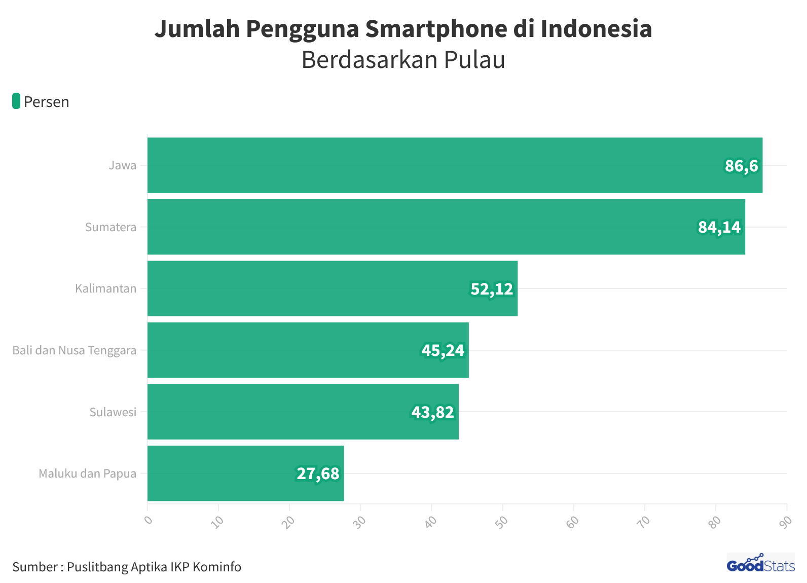

Rata-rata orang Indonesia menghabiskan lebih dari delapan jam per hari di depan layar digital, menjadikan Indonesia salah satu negara dengan screen time tertinggi di dunia menurut laporan We Are Social 2024. Kita mengecek ponsel rata-rata 96 kali sehari, artinya sekali setiap 10 menit selama jam terjaga.
Dampaknya sudah terasa luas: kesulitan berkonsentrasi, tidur yang terganggu, kecemasan yang meningkat, dan hubungan nyata yang perlahan terkikis. Digital detox adalah respons terhadap realitas ini, bukan tren gaya hidup semata. Namun banyak orang salah memahami konsepnya.
Mengapa Kita Perlu Detox Digital?
Otak manusia tidak dirancang untuk mengonsumsi informasi dalam volume dan kecepatan seperti yang dituntut oleh teknologi digital modern. Setiap notifikasi, setiap scroll, setiap video pendek yang ditonton adalah stimulus baru yang membutuhkan respons dari sistem perhatian otak. Akibatnya, otak kita hampir tidak pernah mendapat kesempatan untuk benar-benar beristirahat.
Dr. Gloria Mark dari University of California, Irvine, menemukan dalam penelitiannya bahwa setelah terganggu oleh notifikasi digital, dibutuhkan rata-rata 23 menit 15 detik untuk kembali ke tingkat fokus penuh pada pekerjaan sebelumnya. Jika kamu mendapat 20 notifikasi sehari dan merespons semuanya, secara teori kamu tidak pernah benar-benar fokus sepanjang hari kerja.

Penelitian dari University of Pennsylvania (2018) yang dipimpin oleh Melissa Hunt menemukan bahwa membatasi penggunaan media sosial hingga 30 menit per hari selama tiga minggu menghasilkan penurunan signifikan dalam tingkat kesepian dan depresi pada partisipan, meski mereka sendiri memperkirakan sebelumnya bahwa pembatasan tersebut tidak akan berdampak besar.
Mitos Detox Digital yang Perlu Diluruskan
Sebelum masuk ke cara-cara konkret, penting untuk membongkar beberapa miskonsepsi yang membuat banyak orang enggan mencoba atau mudah menyerah saat mencoba detox digital:
Mitos: Detox Digital Berarti Tidak Boleh Menyentuh Ponsel Sama Sekali
Fakta: Detox digital yang efektif bukan tentang abstinens total, melainkan tentang penggunaan yang lebih intensional. Bahkan jika kamu hanya menghapus dua aplikasi yang paling menyita waktu, itu sudah merupakan detox yang bermakna.
Mitos: Detox Harus Dilakukan Selama Berhari-hari atau Berminggu-minggu
Fakta: Penelitian terbaru menunjukkan bahwa intervensi pendek pun, bahkan 24 jam tanpa smartphone, menghasilkan perbaikan terukur dalam kondisi psikologis, tingkat stres, dan kualitas tidur partisipan.
Mitos: Detox Digital Hanya untuk Orang yang Sudah Kecanduan
Fakta: Detox digital adalah praktik preventif yang bermanfaat untuk semua orang. Sama seperti olahraga tidak hanya untuk orang yang sakit, detox digital adalah pemeliharaan kesehatan mental yang bisa dilakukan siapa saja.
Mitos: Detox Digital Akan Mengisolasimu dari Pergaulan Sosial
Fakta: Banyak penelitian justru menemukan bahwa mengurangi konsumsi media sosial meningkatkan kualitas interaksi sosial nyata. Kamu menjadi lebih hadir, lebih penuh perhatian, dan lebih mudah terhubung secara tulus dengan orang-orang di sekitarmu.
Cara 1 — Micro-Detox Harian (15 Menit)
Cara paling mudah untuk memulai detox digital adalah dengan micro-detox: periode pendek tanpa layar yang dilakukan secara konsisten setiap hari. Pendekatan ini efektif justru karena rendah hambatan dan mudah dilakukan bahkan di tengah jadwal padat sekalipun.
Formula Micro-Detox: Pilih satu atau dua momen yang sama setiap hari, misalnya 15 menit pertama setelah bangun tidur dan 15 menit sebelum tidur, dan jadikan keduanya sebagai zona bebas layar. Tanpa pengecualian, termasuk "hanya cek pesan sebentar."
Mengapa dua waktu itu spesifik? Karena 15 menit pertama setelah bangun tidur adalah saat otak dalam kondisi paling rentan terhadap stimulasi berlebihan. Membuka ponsel langsung saat bangun menempatkan otak dalam mode reaktif sejak dini, alih-alih mode reflektif yang lebih sehat. Sebaliknya, malam sebelum tidur, paparan layar mengganggu produksi melatonin dan menurunkan kualitas tidur secara signifikan.
Gantikan dua slot waktu tersebut dengan aktivitas sederhana: stretching ringan, menulis jurnal, meditasi singkat, atau sekadar duduk dan menikmati kopi pagi tanpa distraksi. Setelah dua minggu melakukannya secara konsisten, banyak orang melaporkan kualitas tidur yang lebih baik dan mood pagi hari yang lebih stabil.
Cara 2 — Restrukturisasi Lingkungan Digital
Cara ini bukan tentang mengurangi penggunaan melalui tekad, melainkan melalui desain ulang lingkungan digital sehingga kebiasaan yang lebih sehat menjadi lebih mudah secara default. Psikolog perilaku menyebut pendekatan ini sebagai choice architecture.
- Audit dan hapus aplikasi yang tidak memberikan nilai nyata. Buka folder aplikasi di ponselmu dan tanyakan untuk setiap aplikasi: "Kapan terakhir kali aplikasi ini memberikan sesuatu yang bermakna untuk hidupku?" Jika jawabannya lebih dari sebulan lalu, hapus. Kamu bisa selalu mengunduhnya kembali jika ternyata membutuhkan.
- Matikan semua notifikasi push kecuali panggilan dan pesan langsung. Email, berita, media sosial, dan game tidak perlu mengganggu konsentrasimu secara real-time. Kamu yang mendatangi informasi, bukan informasi yang terus-menerus mendatangimu.
- Ubah tampilan ponsel menjadi grayscale. Layar berwarna dirancang untuk lebih menarik perhatian dan memicu dopamin. Tampilan abu-abu secara bermakna mengurangi daya tarik impulsif dari aplikasi dan media sosial.
- Pindahkan aplikasi media sosial dan game dari homescreen. Tempatkan dalam folder berlapis di halaman terakhir. Hambatan kecil sekalipun cukup untuk memutus pola membuka aplikasi secara refleks tanpa niat yang jelas.
- Gunakan charger yang ditempatkan di luar kamar tidur. Ini sekaligus memaksamu tidak membawa ponsel ke tempat tidur dan menghilangkan godaan untuk menggunakannya di malam hari atau dini hari.
Jangan melakukan semua perubahan ini sekaligus dalam satu hari. Pilih dua atau tiga yang paling relevan untukmu dan lakukan terlebih dahulu. Perubahan bertahap jauh lebih berkelanjutan daripada overhaul total yang sering kali berujung pada kembali ke kebiasaan lama.
Cara 3 — Dopamine Fasting yang Realistis
Istilah dopamine fasting dipopulerkan oleh Dr. Cameron Sepah, psikiater klinis dari University of California San Francisco, sebagai cara untuk mengkalibrasi ulang respons reward otak terhadap stimulasi berlebih dari dunia digital. Namun konsep ini sering disalahpahami sebagai menghindari semua kesenangan, yang tentu tidak realistis.
Dopamine fasting yang sesungguhnya lebih tepat disebut sebagai Cognitive Behavioral Therapy untuk perilaku impulsif: mengurangi stimulus berlebihan yang spesifik, terutama yang paling kompulsif, untuk waktu yang terbatas dan terencana.
Identifikasi Aplikasi "High-Dopamine" Milikmu
Cek screen time di ponselmu dan temukan tiga aplikasi yang paling banyak kamu gunakan di luar kebutuhan kerja atau studi. Ini biasanya adalah media sosial, short-form video (TikTok, Instagram Reels, YouTube Shorts), atau game mobile.
Tetapkan Jeda Terjadwal
Pilih satu hari per minggu di mana kamu tidak membuka ketiga aplikasi tersebut sama sekali. Bukan karena mengharuskan diri melakukan hal produktif sebagai gantinya, melainkan sekadar memberi otak jeda dari stimulus tersebut.
Pantau Perubahan yang Terjadi
Setelah empat minggu, bandingkan level kecemasan, kualitas tidur, dan kemampuan fokusmu di hari-hari detox dibanding hari-hari biasa. Banyak orang terkejut mendapati betapa signifikan perbedaannya, bahkan dari intervensi sesederhana ini.
Yang penting untuk diingat: tujuannya bukan membuat otak tidak bisa merasakan kesenangan, melainkan menurunkan ambang batas stimulus yang dibutuhkan untuk merasakan kepuasan. Ketika otak tidak terus-menerus dibanjiri dopamin artifisial dari scroll dan notifikasi, aktivitas sederhana seperti membaca buku, berjalan di taman, atau mengobrol panjang dengan teman kembali terasa memuaskan secara natural.
Cara 4 — Bangun Rutinitas Analog yang Kuat
Detox digital yang paling berkelanjutan bukan yang sekadar mengurangi sesuatu, melainkan yang mengisi kekosongan yang ditinggalkan dengan sesuatu yang bermakna. Alam benci kekosongan, dan jika kamu mengurangi screen time tanpa menggantinya dengan aktivitas lain, godaan untuk kembali ke layar akan jauh lebih kuat.
Prinsip Penggantian: Untuk setiap jam screen time yang kamu kurangi, rencanakan aktivitas analog konkret yang akan mengisi waktu tersebut. Jangan tinggalkan slot kosong. "Berhenti main game jam 9 malam" harus diikuti dengan "lalu aku akan membaca buku / berlatih gitar / menyiapkan pakaian besok."
Beberapa aktivitas analog yang terbukti efektif sebagai pengganti screen time:
- Membaca buku fisik. Tidak e-book, tidak audiobook, melainkan buku fisik yang memaksa otak untuk memproses informasi secara linier dan tanpa hyperlink yang bisa mengalihkan perhatian. Bahkan 20 menit membaca sebelum tidur secara signifikan memperbaiki kualitas tidur dibanding scrolling media sosial.
- Aktivitas fisik teratur. Olahraga adalah salah satu pendorong neuroplastisitas terkuat yang diketahui sains. Bahkan jalan kaki 30 menit di luar ruangan menghasilkan perbaikan mood dan penurunan kecemasan yang setara dengan dosis rendah obat antidepresan dalam beberapa penelitian.
- Hobi berbasis tangan. Memasak, berkebun, melukis, merajut, atau merakit model adalah contoh aktivitas yang memberikan kepuasan dopaminergik yang nyata melalui progres yang bisa dilihat dan produk yang bisa dipegang.
- Interaksi sosial tatap muka. Kualitas 30 menit percakapan langsung yang tulus jauh melebihi jam-jam scrolling konten sosial. Jadwalkan pertemuan rutin dengan teman dekat atau keluarga tanpa perangkat di meja.
- Mindfulness atau meditasi. Bahkan 10 menit meditasi sehari terbukti secara neuroimaging memperkuat koneksi di korteks prefrontal, bagian otak yang bertanggung jawab atas kendali diri dan pengambilan keputusan yang menjadi lemah akibat konsumsi digital berlebihan.
Cara 5 — Digital Sabbath Mingguan
Konsep digital sabbath mengadaptasi tradisi hari istirahat dari berbagai budaya dan agama ke dalam konteks modern: satu hari per minggu di mana kamu sengaja meminimalkan atau menghentikan penggunaan perangkat digital non-esensial.
Berbeda dengan detox total yang terasa memaksa, digital sabbath adalah praktik yang terencana, terstruktur, dan memiliki batas yang jelas sehingga lebih mudah dipatuhi secara konsisten. Kamu tahu bahwa ini hanya satu hari, dan sisanya normal. Sifat terbatas inilah yang membuatnya psikologis lebih mudah dijalani.
Pilih Hari yang Tepat
Pilih hari yang paling sedikit tuntutan digitalnya, biasanya akhir pekan. Pastikan orang-orang terdekat tahu bahwa kamu tidak akan merespons pesan atau media sosial di hari tersebut agar tidak ada yang khawatir.
Tentukan Aturan yang Realistis
Tidak harus melarang semua teknologi. Definisikan sendiri: misalnya, "tidak ada media sosial, tidak ada game, tidak ada streaming video, tetapi boleh menggunakan GPS untuk navigasi atau kalkulator untuk belanja." Aturan yang realistis lebih baik dari aturan sempurna yang tidak dijalankan.
Rencanakan Pengisian Hari Tersebut
Kosongnya jadwal adalah musuh terbesar digital sabbath. Sebelum hari H, rencanakan beberapa aktivitas yang mengisi waktu secara menyenangkan: piknik, memasak resep baru, mengunjungi teman, atau eksplorasi tempat baru di kotamu.
Evaluasi dan Sesuaikan
Setelah sebulan, evaluasi bagaimana rasanya. Apakah kamu merasa lebih tenang? Lebih hadir? Lebih kreatif? Gunakan temuan ini untuk memotivasi diri melanjutkan atau bahkan memperluas praktiknya secara bertahap.
Minggu-minggu pertama digital sabbath biasanya terasa tidak nyaman. Kamu mungkin merasa gelisah, ingin terus mengecek ponsel, atau bingung harus melakukan apa. Perasaan ini normal dan justru merupakan bukti bahwa detox ini dibutuhkan. Ketidaknyamanan awal biasanya hilang setelah tiga hingga empat minggu konsisten.
Dari Mana Harus Memulai?
Lima cara di atas tidak harus dilakukan semuanya sekaligus. Justru sebaliknya: memilih satu cara dan menjalankannya dengan konsisten selama sebulan penuh jauh lebih efektif daripada mencoba semua lima cara sekaligus selama tiga hari lalu berhenti.
Mulailah dengan pertanyaan jujur ini: "Aspek mana dari kehidupan digitalku yang paling berdampak negatif pada kesejahteraanku saat ini?" Jawaban atas pertanyaan itu menunjukkan di mana kamu harus memulai.
- Jika tidurmu terganggu, mulai dengan Cara 1: micro-detox 15 menit sebelum tidur.
- Jika fokusmu pecah-pecah sepanjang hari kerja atau belajar, mulai dengan Cara 2: matikan notifikasi non-esensial.
- Jika kamu menghabiskan terlalu banyak waktu di aplikasi spesifik, mulai dengan Cara 3: dopamine fasting terjadwal untuk aplikasi tersebut.
- Jika kamu merasa hidup kurang bermakna dan terlalu banyak waktu terbang tanpa terasa, mulai dengan Cara 4: bangun satu rutinitas analog baru yang konsisten.
- Jika kamu ingin recharge mental secara menyeluruh, coba Cara 5: satu hari digital sabbath minggu depan.
Yang perlu diingat selalu: Teknologi digital adalah alat, dan seperti semua alat, ia seharusnya melayani kamu, bukan sebaliknya. Detox digital bukan tentang menolak teknologi, melainkan tentang memilih secara sadar bagaimana dan kapan kamu menggunakannya. Kamu yang memegang kendali.
- Alodokter — Ciri-Ciri Kecanduan Game Online dan Cara Mengatasinya
- Halodoc — WHO: Kecanduan Game Merupakan Gangguan Mental
- Kementerian Kesehatan RI — Faktor Penyebab Kecanduan Game Online
- Hunt et al. (2018) — No More FOMO: Limiting Social Media Decreases Loneliness and Depression (Journal of Social and Clinical Psychology)
- Mark et al. (2008) — The Cost of Interrupted Work: More Speed and Stress (University of California, Irvine)